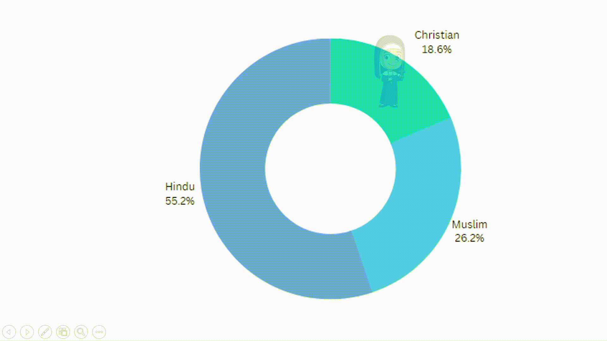
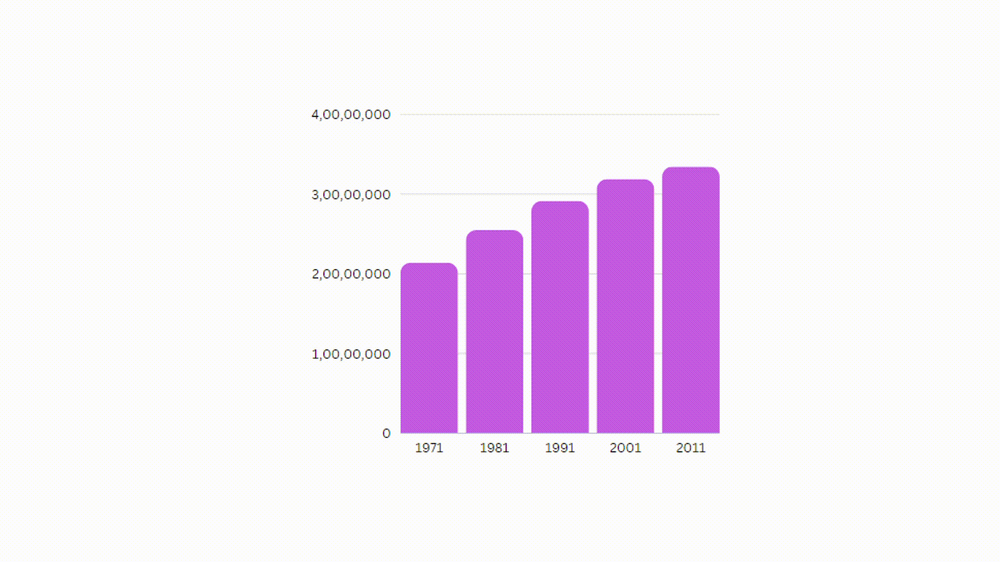

1.Population trend of Kerala over the years
2.Religious rate of Kerala


Hindus constitute 54.7% of the population of Kerala, followed by Islam with 26.6% population and Christianity at third with 18.4% population as per 2011 census.

By 2001 the Kerala state population is 31.8 million, growth rate is 2.3 times for the period of 50 years. In 2011 census the population was 33.4 million with a increase of 4.91% compared to the last census in 2001. By 2021 it is estimated that the population will be 35.8 million with a growth rate of 7.2% The decadal growth rate of Kerala's population was 4.9 per cent, the lowest among Indian States